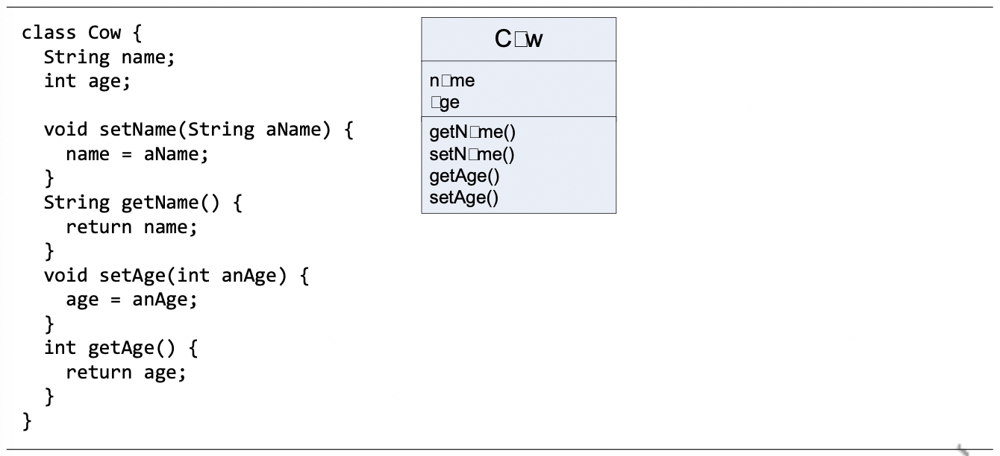
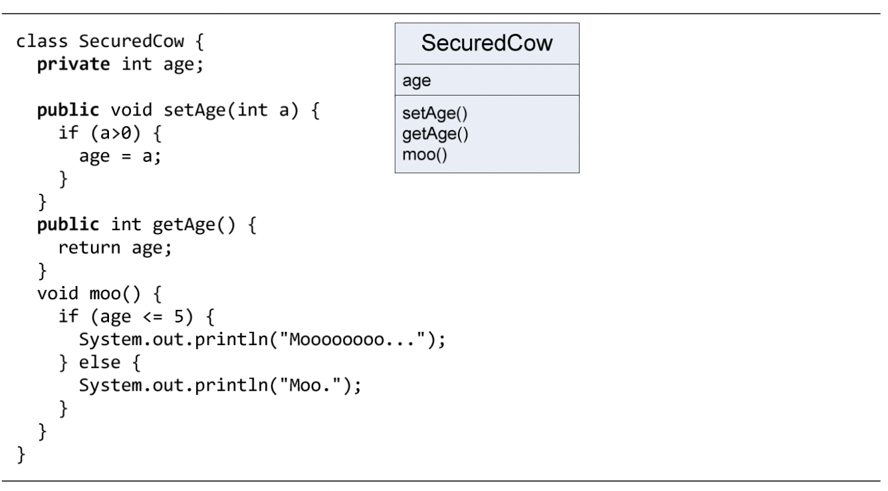
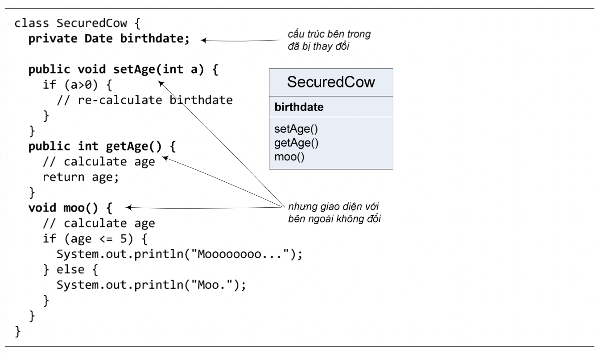

Các tham số và giá trị trả về được sử dụng đắc lực nhất trong các phương thức có nhiệm vụ truy nhập dữ liệu của đối tượng. Có hai loại phương thức truy nhập:
Ví dụ như trong Hình 5.6
Hình 5.6: Lớp Cow với các hàm đọc/ghi
Cho đến nay, ta đã lờ đi một trong những nguyên tắc quan trọng nhất của lập trình hướng đối tượng, đó là đóng gói và che giấu thông tin. Nguyên tắc này nói rằng "Đừng để lộ cấu trúc dữ liệu bên trong". Trong tất cả các ví dụ từ đầu cuốn sách đến giờ, ta đã để lộ tất cả dữ liệu. 'Để lộ' ở đây có nghĩa là từ bên ngoài lớp có thể dùng một tham chiếu tới đối tượng kèm theo toán tử dấu chấm (.) để truy nhập biến thực thể của đối tượng đó. Ví dụ:
theCow.age = 2;
Nói cách khác là ta đang cho phép dùng tham chiếu để trực tiếp sửa biến thực thể của đối tượng. Đây là công cụ nguy hiểm nếu đặt trong tay những ai muốn phá hoại hoặc không biết dùng đúng cách. Nó cho phép người ta làm những việc chẳng hạn như cho một đối tượng Cow có tuổi là số âm:
theCow.age = -2;
Để ngăn chặn nguy cơ này, ta cần cài các phương thức set cho các biến thực thể và tìm cách buộc các đoạn mã khác phải gọi các phương thức set thay vì truy nhập trực tiếp đến dữ liệu. Khi đã đảm bảo được rằng gọi một phương thức set là cách duy nhất để sửa một biến thực thể, ta có thể kiểm tra tính hợp lệ của dữ liệu mới và bảo vệ không cho phép bất cứ ai gán một giá trị không hợp lệ cho biến thực thể đó. Ví dụ, trong lớp Cow, phương thức setAge() có thể bảo vệ tính hợp lệ của biến thực thể age như sau:
void setAge(int a) {
if (a >= 0) {
age = a;
}
}
Nửa công việc còn lại, cần làm gì để che giấu dữ liệu, không cho phép các đoạn mã khác dùng tham chiếu trực tiếp sửa biến thực thể? Làm cách nào để che giấu dữ liệu? Quy tắc khởi đầu cho việc thực hiện đóng gói là: đánh dấu các biến thực thể với từ khóa private và cung cấp các phương thức public set và get cho biến đó. Các từ khóa private và public quy định quyền truy nhập của biến thực thể, phương thức, hay lớp được khai báo với từ khóa đó. (Ta đã quen với từ khóa public, nó đi kèm khai báo của tất cả các phương thức main.) Từ khóa private có nghĩa là riêng tư, cá nhân. Trong một lớp, biến thực thể / phương thức nào được khai báo với từ khóa private thì chỉ có mã chương trình ở bên trong lớp đó mới có quyền truy nhập biến / phương thức đó. Từ nay ta sẽ gọi các biến / phương thức được khai báo với từ khóa private là biến private / phương thức private. Còn public có nghĩa là mã ở bất cứ đâu đều có thể truy nhập biến / phương thức đó.
Minh họa ở lớp ProtectedCow trong Hình 5.7. Tại đó, biến thực thể age được khai báo là biến private, còn hai phương thức get và set tương ứng, setAge() và getAge(), được khai báo là phương thức public. Khi ta thành thạo hơn trong việc thiết kế và cài đặt bằng Java, ta có thể sẽ làm hơi khác, nhưng tại thời điểm này, quy tắc đơn giản "biến thực thể private, get và set public" là lựa chọn an toàn.
Hình 5.7: Lớp SecuredCow và nguyên tắc đóng gói
Ngoài việc bảo vệ dữ liệu, đóng gói và che giấu dữ liệu còn mang lại một lợi ích khác. Đó là khả năng thay đổi cấu trúc bên trong của một lớp mà không làm ảnh hưởng đến những phần mã bên ngoài có sử dụng đến lớp đó.
Tại ví dụ trong Hình 5.8, cấu trúc bên trong của lớp SecuredCow đã bị sửa đổi. Tuổi của bò không được đại diện bởi biến thực thể age như trước mà thay vào đó là biến birthdate lưu ngày sinh của con bò. Tuổi của bò có thể được tính từ ngày sinh và ngày tháng năm hiện tại. Nội dung các phương thức dùng đến giá trị tuổi bò cũng thay đổi một cách tương xứng. Trong khi đó, giao diện của lớp SecuredCow với bên ngoài không thay đổi. Cụ thể là các phương thức public vẫn giữ nguyên tên, kiểu trả về, và danh sách tham số. Điều đó có nghĩa rằng các đoạn mã dùng đến SecuredCow từ bên ngoài sẽ không bị thay đổi.
Hình 5.8: Lớp SecuredCow với cấu trúc bên trong đã được sửa.
Chương trình ClientProgram dưới đây đã chạy được với phiên bản trước của SecuredCow và cũng chạy được với phiên bản mới mà không cần sửa đổi. Bất kì chương trình nào khác dùng đến SecuredCow cũng đều tiếp tục hoạt động như không có thay đổi gì đã xảy ra.
class ClientProgram {
public static void main (String [] args) {
SecureCow cow = new SecuredCow();
cow.setAge(2);
cow.moo();
System.out.println(cow.getAge())
}
}
Tình huống tương tự không xảy ra đối với lớp Cow khi ta muốn đổi age thành birthdate hay một thay đổi tương tự. Các đoạn mã trực tiếp truy nhập biến age từ bên ngoài sẽ không thể chạy được sau sửa đổi.
Khả năng thay đổi cấu trúc bên trong của một lớp mà không làm ảnh hưởng đến những phần mã bên ngoài có sử dụng đến lớp đó cho phép ta giảm mạnh số lỗi phát sinh do sửa chương trình. Điều đó rất có giá trị cho việc phát triển chương trình một cách hiệu quả.
Việc che giấu chi tiết bên trong của một mô-đun nếu được thực hiện càng tốt thì càng làm giảm sự phụ thuộc lẫn nhau giữa mô-đun này và phần còn lại của hệ thống. Mô-đun đó không phải phụ thuộc vào việc nó phải được bên ngoài sử dụng đúng cách, vì nó có thể tự đảm bảo là nó không thể bị dùng sai cách. Ví dụ, từ bên ngoài lớp Cow chỉ có thể sửa tuổi bò thông qua setAge(), trong khi setAge() đảm bảo bò không thể có tuổi là số âm. Ngược lại, phần còn lại của hệ thống không phải biết quá nhiều về mô-đun đó để có thể sử dụng nó đúng cách. Ví dụ, chỉ cần gọi setAge() chứ không trực tiếp gán giá trị cho biến thực thể của Cow nên không cần biết Cow dùng cách gì để lưu trữ tuổi bò, quy tắc cho giá trị đó như thế nào. Sự ít phụ thuộc lẫn nhau giữa các mô-đun chương trình là một trong những đặc điểm của thiết kế có chất lượng tốt.